Pendant sept jours d'affilée, j'ai eu un bot qui surveillait discrètement deux des plus grandes plateformes de marchés de prédiction de la planète, Kalshi et Polymarket, en attendant une chose précise : un écart de prix qui garantit un profit dès son apparition. Et le truc fou, c'ضai pas écrit une seule ligne de code pour le construire. J'ai juste connecté mon compte Kalshi et dit au bot quoi faire en bon français.
Interface & Outils : Interface web de création de bots et plateforme de prédiction Polymarket.
Contenu textuel & Code : Formulaire de configuration de bot ("New bot"), options d'achat de contrats de prédiction (Ken Paxton à 52%), et journaux d'activité de bots d'arbitrage ("Arb bot checked... no trade yet").
Action / Démonstration : Configuration d'un bot de trading par IA et surveillance des marchés de prédiction pour détecter des opportunités d'arbitrage.
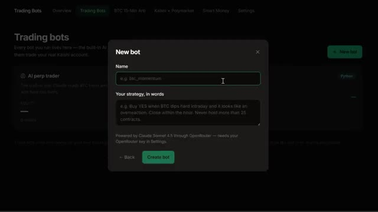
🔍 Agrandir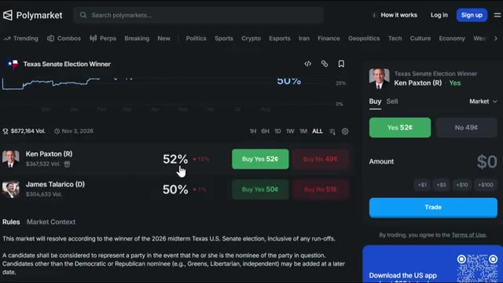
🔍 Agrandir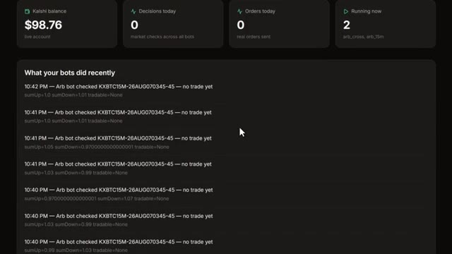
🔍 AgrandirC'est tout. Dans cette vidéo, je vous montre les résultats complets sur sept jours, en expliquant exactement comment fonctionne cet arbitrage entre les deux plateformes, en vous guidant pas à pas dans la configuration de votre propre compte Calci, et enfin en vous montrant précisément comment construire ce même bot vous-même. Entrons dans le vif du sujet. Voici donc le concept, et c'est en réalité bien plus simple que les gens ne le pensent.
Interface & Outils : Navigateur web affichant le site d'Investopedia, la plateforme Kalshi et une application de bots de trading.
Contenu textuel & Code : Définition de l'arbitrage, options de création de compte Kalshi, et paramètres de stratégie pour le bot "BTC 15-Min Arb" et "Kalshi x Polymarket Arb".
Action / Démonstration : Navigation sur le site d'information, présentation de l'interface d'inscription d'un broker et démonstration des réglages d'un bot d'arbitrage automatisé.
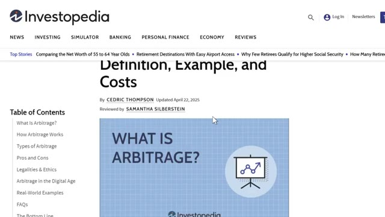
🔍 Agrandir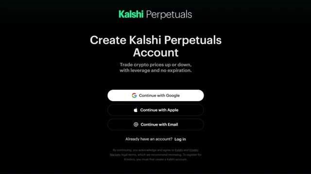
🔍 Agrandir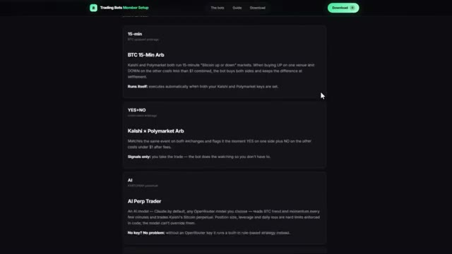
🔍 AgrandirCalci et Polymarket proposent tous deux des marchés sur les mêmes événements du monde réel. Le Bitcoin atteindra-t-il un certain prix ? Une certaine équipe va-t-elle gagner ? Un certain résultat se produira-t-il à une certaine date ? Normalement, le « oui » et le « non » sur un même événement devraient faire un total d'environ 1 dollar puisque l'un d'eux doit nécessairement se produire. Mais comme il s'agit de deux plateformes complètement séparées avec des carnets d'ordres distincts et des traders différents, les prix ne s'alignent pas toujours. Parfois, le « oui » sur Calci se négocie à bas prix et le « non » sur Polymarket pour ce même événement exact se négocie également à bas prix. Et si vous achetez les deux côtés pour moins de
Interface & Outils : Sites web de marchés de prédiction (Polymarket et Kalshi).
Contenu textuel & Code : Graphiques de probabilités et d'évolution des cotes pour différents scénarios (températures et résultats sportifs), options d'achat/vente et volumes d'échange.
Action / Démonstration : Navigation et présentation des plateformes de marchés prédictifs concurrentes.
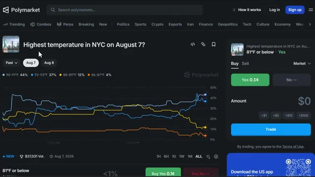
🔍 Agrandir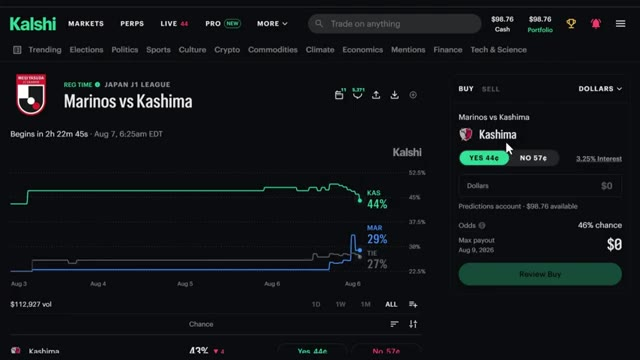
🔍 Agrandirun dollar combiné après les frais, vous verrouillez un profit garanti peu importe l'issue réelle de l'événement, cet écart n'existe que pendant quelques secondes ou minutes avant que quelqu'un ne le comble, ce qui explique exactement pourquoi vous voulez qu'un bot le surveille à votre place. Maintenant que vous comprenez les mécanismes derrière tout ça, allons configurer entièrement votre compte Kelsey pour que vous soyez prêt à saisir ces écarts vous-même. Donc, pour commencer, vous allez vouloir créer un compte, vous pouvez vous inscrire avec Google, Apple ou simplement avec votre adresse e-mail. Le lien est juste en bas si vous voulez y aller directement et, soit dit en passant, si
Interface & Outils : Navigateur web, interface de gestion de bots de trading, plateforme Kalshi Perpetuals.
Contenu textuel & Code : Définition de l'arbitrage, métriques de bots (décisions, ordres, statut en cours), options de connexion de compte (Google, Apple, Email).
Action / Démonstration : Navigation sur une interface de bot de trading et présentation des options de connexion.
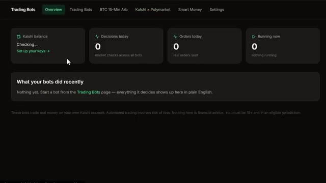
🔍 Agrandir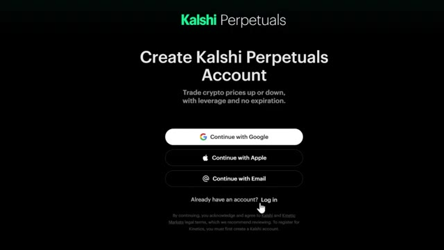
🔍 Agrandirvous vous inscrivez via mon lien sur predictions, vous obtenez jusqu'à 500 dollars de bonus une fois que vous commencez à trader et sur perps, ce nouveau marché crypto à la hausse ou à la baisse de kalshi, vous pouvez obtenir un bonus de 25 dollars rien que pour commencer, donc ça vaut vraiment le coup de saisir ça avant de vous lancer. Si vous ne voyez pas l'invite tout de suite, allez simplement en haut à droite là où il est écrit s'inscrire et vous verrez ces mêmes options. C'est un processus assez classique, ils vous demanderont de vérifier deux ou trois choses, mais une fois que vous y êtes, vous avez pratiquement accès à tout ce que vous voyez sur mon écran en ce moment. Très bien, alors maintenant parlons
Interface & Outils : Plateforme de trading et de prédiction Kalshi.
Contenu textuel & Code : Cours des cryptomonnaies, leviers maximaux, volumes sur 24 heures et graphiques de probabilité de marchés de prédiction. [DESC_IMAGE_1] Navigation sur la liste des marchés de cryptomonnaies perpétuels et affichage des variations de prix.
Action / Démonstration : Explications face caméra et analyse conceptuelle des marchés.
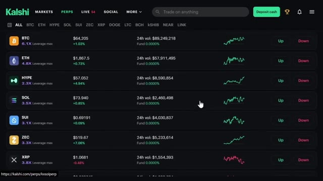
🔍 Agrandir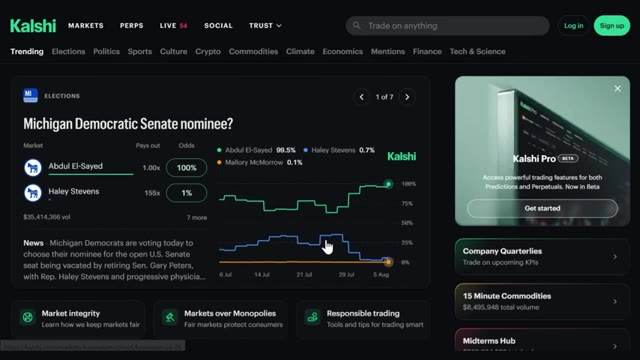
🔍 Agrandir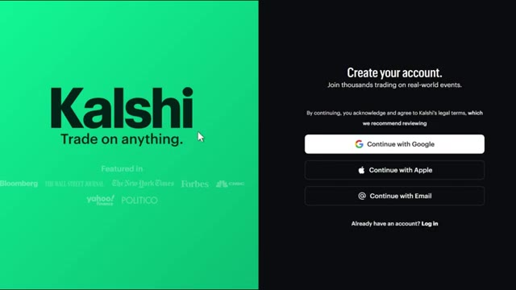
🔍 Agrandirà propos du rechargement de votre compte, car c'est ici que les gens se trompent un peu. En haut à droite, cliquez sur ces trois lignes et allez dans ajouter des fonds. C'est une première façon de faire. Vous pouvez aussi cliquer sur déposer des espèces directement sur la page d'accueil et vous verrez trois options de virement instantané : carte, Google Pay et crypto. Si vous cliquez sur plus d'options, vous verrez également le virement bancaire, qui prend au moins un jour ouvré et celui-ci a un minimum de 1 000 dollars mais pas de maximum. C'est donc plutôt destiné aux personnes qui transfèrent des montants plus importants. Maintenant, voici quelque chose d'important. Vous savez, si vous connectez votre carte ou Google Pay
Interface & Outils : Kalshi (plateforme de prédictions et de trading)
Contenu textuel & Code : Options de dépôt de fonds : "Card" (marqué comme le plus populaire), "Google Pay", "Crypto" et "View more options", avec une mention "Instant transfer - No fees on first deposit".
Action / Démonstration : Sélection ou visualisation des différentes méthodes de dépôt de fonds disponibles sur la plateforme.
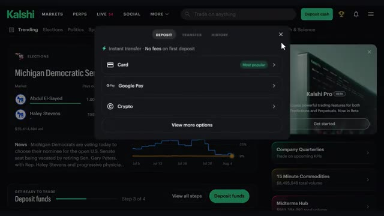
🔍 Agrandiril y a zéro pour cent de frais de traitement sur ceux-là, ce qui est honnêtement génial. Donc vous ne vous faites pas assommer juste pour un dépôt. Donc personnellement, si vous voulez l'option la plus rapide, je connecte simplement votre carte ou Google Pay directement et vous y êtes en quelques secondes. Mais si vous avez déjà des crypto, vous pouvez emprunter cette voie aussi. Cliquez sur l'option crypto et vous verrez trois choix. Dépôt sécurisé, dépôt standard, et acheter des crypto. Sur dépôt sécurisé, vous pouvez connecter votre compte directement depuis des plateformes comme Coinbase, Uphold, Cash App, et quelques autres. Ou si vous avez des crypto qui patientent dans un portefeuille,
Interface & Outils : Kalshi (plateforme de marché de prédiction / trading)
Contenu textuel & Code : Menu de dépôt avec les options "Card" (marquée comme "Most popular" avec "No fees on first deposit"), "Google Pay", "Crypto" et un curseur de souris pointant sur l'option carte.
Action / Démonstration : Sélection de la méthode de dépôt par carte ou Google Pay pour effectuer un transfert instantané sans frais.
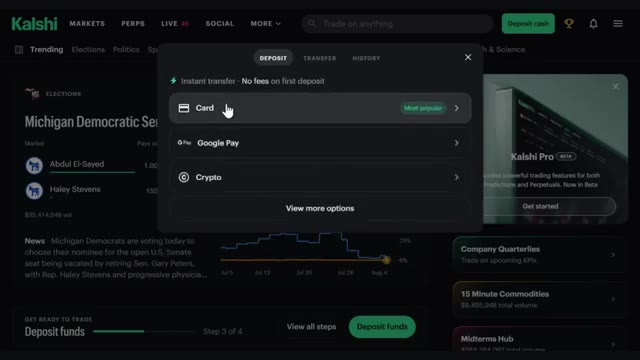
🔍 Agrandirvous pouvez connecter Metamask, Phantom, Trust Wallet, et plus encore. Si votre échange n'est pas répertorié, vous pouvez faire un dépôt standard à la place, tout comme un transfert de crypto normal. Choisissez votre jeton comme l'USDT, choisissez votre réseau, cliquez sur afficher l'adresse, copiez cette adresse, et allez la coller dans votre échange pour l'envoyer. Gardez simplement à l'esprit qu'il y a un minimum de 3 $ sur celui-ci. Et si vous n'avez pas du tout de crypto, vous pouvez simplement l'acheter instantanément en utilisant votre carte par l'intermédiaire de fournisseurs comme Coinbase, Cash App, ou Robinhood directement dans l'application. Si vous ne faites que débuter, je suggère d'avoir un dépôt maximum quotidien
Interface & Outils : Plateforme de trading Kalshi (Interface Web)
Contenu textuel & Code : Menu de sélection de jetons de dépôt avec des options populaires (BTC, USDC, USDT) et autres (BNB, CASH).
Action / Démonstration : Sélection d'un jeton pour effectuer un dépôt de cryptomonnaie sur la plateforme.
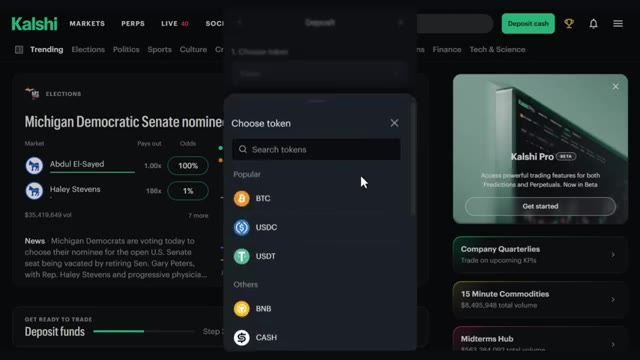
🔍 Agrandirpas plus de 500 dollars, ce qui, honnêtement, est amplement suffisant pour la plupart des débutants. Et lier votre carte ou votre compte bancaire rend également les retraits beaucoup plus rapides puisque l'argent retourne directement au même endroit. Maintenant, avant de configurer le bot, allons chercher vos clés API d'abord. Cliquez à nouveau sur les trois lignes et cliquez sur compte et sécurité. Faites défiler vers le bas et cliquez sur créer une clé. Donnez-lui un surnom, quelque chose comme CalShe automated trading. Pour qu'il puisse trader pour vous, cliquez sur accès complet, puis cliquez sur créer. Cela vous donnera deux codes. Sauvegardez-les pour plus tard, sur quelque chose comme des notes adhésives.
Interface & Outils : Plateforme de prédiction et de trading Kalshi (Interface Web).
Contenu textuel & Code : Menus de dépôt, options de paiement, paramètres de compte et interface de génération de clés API (Read only / Full access).
Action / Démonstration : Navigation dans les paramètres de la plateforme pour configurer le compte, ajouter des fonds et créer une clé API pour un bot de trading.
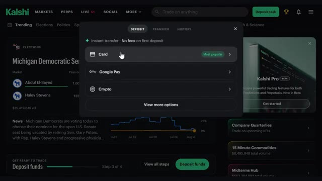
🔍 Agrandir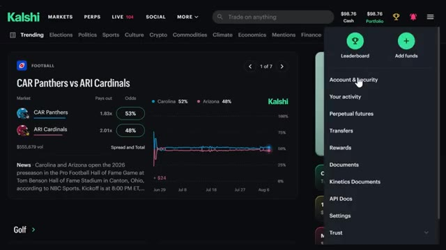
🔍 Agrandir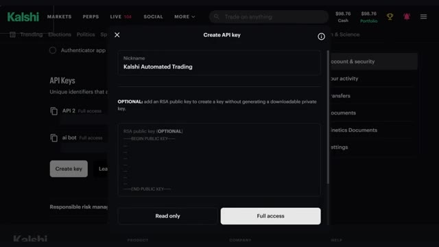
🔍 Agrandirou bloc-notes. Notez que cela ne sera affiché qu'une seule fois, alors copiez-le soigneusement. Maintenant, en passant aux bots, il y aura une demande de mot de passe. Entrez simplement votre mot de passe. Ensuite, entrez simplement votre clé API CalShea et votre clé privée et enregistrez. Vous avez également la possibilité d'inclure votre clé de portefeuille open router et polymarket ici. Maintenant, si vous voulez que tout cela soit déjà construit pour vous, je l'ai sur mon groupe WAP.
Interface & Outils : Kalshi (plateforme de prédiction et de trading)
Contenu textuel & Code : Section « API Keys » listant des clés avec accès complet (« Kalshi Automated Trading », « API 2 », « ai bot »), ainsi qu'un menu latéral affichant les options « Account & security », « Your activity », « Transfers », « Documents », etc.
Action / Démonstration : Consultation et gestion des clés API dans les paramètres du compte utilisateur Kalshi.
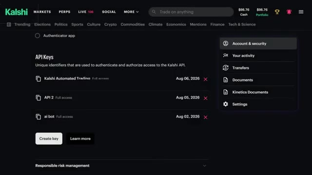
🔍 AgrandirLiens ci-dessous. Plus de détails là-dessus dans un instant. Très bien, une fois que vos clés sont connectées, vous arrivez directement ici sur le tableau de bord et c'est en gros votre centre de commande en haut, vous pouvez voir votre solde, le même qui est reflété directement sur votre véritable compte Kalsche, donc tout reste synchronisé en temps réel juste en dessous, vous avez les décisions que votre bot a prises aujourd'hui, les ordres passés aujourd'hui et exactement quels bots sont actuellement en cours d'exécution en direct, et si vous faites défiler vers le bas, vous trouverez les journaux en direct, en gros un compte rendu complet de tout ce que vos bots ont fait récemment, alors
Interface & Outils : Interface web de bots de trading (centre de commande)
Contenu textuel & Code : Solde Kalshi à 98,76 $, 0 décisions aujourd'hui, 0 ordres aujourd'hui, 2 bots actifs en cours d'exécution, et un journal d'activité récent des bots.
Action / Démonstration : Présentation du tableau de bord principal et du centre de commande des bots de trading.
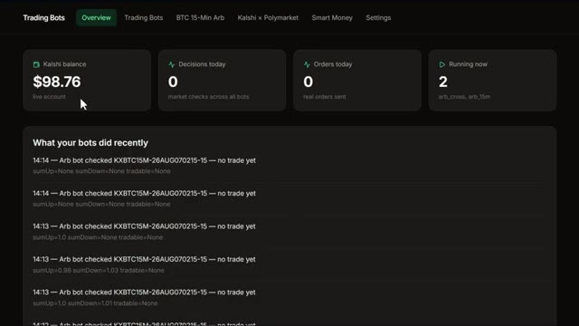
🔍 Agrandirtu ne te demandes jamais ce qui se passe dans les coulisses. Maintenant, j'ai déjà créé mes propres bots pour que vous puissiez les essayer. Laissez-moi vous les présenter rapidement. Voici l'arbitrage Kalshi X Polymarket. Celui-ci associe le même événement sur les deux bourses et signale le moment où un « oui » d'un côté plus un « non » de l'autre coûte moins de 1 $ après les frais. Celui-ci est uniquement un signal. Vous prenez le trade, le bot fait juste la surveillance pour que vous n'ayez pas à le faire. Et honnêtement, c'est tout l'intérêt. Ce bot fait la seule chose qui est pratiquement impossible pour un humain de faire manuellement, c'est-à-dire surveiller deux entiers
Interface & Outils : Interface web de bot de trading et plateforme Kalshi.
Contenu textuel & Code : Tableaux de bord de bots, statistiques de profits/pertes, graphiques de probabilités électorales et carnets d'ordres.
Action / Démonstration : Présentation de l'interface de bot d'arbitrage et des marchés prédictifs disponibles sur Kalshi.
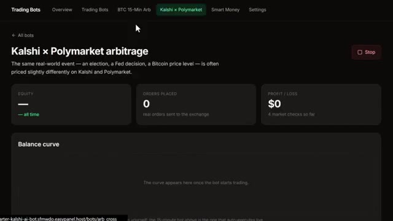
🔍 Agrandir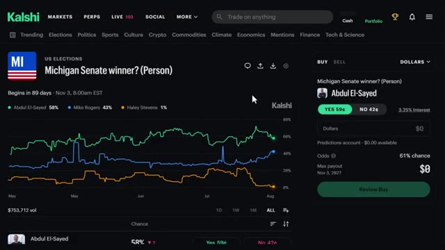
🔍 Agrandirplateformes en même temps en temps réel pour un écart de prix qui pourrait n'exister que pendant quelques secondes. Vous n'êtes pas là assis à rafraîchir deux onglets toute la journée. Cela signale l'opportunité. Il vous suffit de cliquer sur le trade et cette erreur de prix est verrouillée comme un profit garanti avant qu'elle ne disparaisse. Maintenant, si vous vous intéressez plutôt au trading de perps, rappelez-vous du marché crypto à la hausse ou à la baisse que j'ai mentionné plus tôt, vous n'êtes pas bloqué à utiliser seulement les bots que j'ai créés. Vous pouvez créer votre propre stratégie personnalisée à partir de zéro en français simple, et je vais vous montrer exactement comment faire cela en ce moment même. Cliquez sur bots de trading, cliquez sur nouveau bot, et sélectionnez
Interface & Outils : Polymarket et tableau de bord de bots de trading automatisés.
Contenu textuel & Code : Probabilités de marché (Comino à 55¢, Obradovic à 46¢), graphiques d'évolution en pourcentage, et configuration de bots connectés à un compte de trading réel.
Action / Démonstration : Navigation sur la plateforme de paris prédictifs Polymarket et présentation des options de bots de trading automatisés.
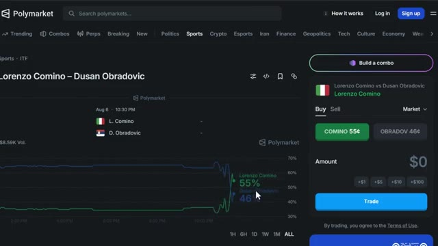
🔍 Agrandir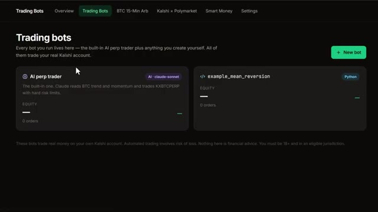
🔍 AgrandirClaude bot. Ici, vous pouvez ajouter un nom et décrire votre stratégie avec des mots. Soyez très détaillé ici. C'est littéralement là que vous lui dites ce que vous voulez que le bot fasse. Après cela, cliquez sur créer le bot, et voilà. Votre bot de trading est prêt à fonctionner. Par exemple, sur l'un des bots que j'ai créés, l'arbitrage Bitcoin sur 15 minutes, vous pouvez voir le nom, la description, les capitaux propres, les ordres passés, les profits et pertes, et la courbe de solde. Tout est ici. Vous pouvez également modifier certains paramètres, le déclencheur de la fenêtre, les contrats par côté, les secondes entre les analyses, et le capital maximum engagé en même temps.
Interface & Outils : Application web de bots de trading, interface de configuration et tableau de bord de suivi (Trading Bots / Kalshi / Polymarket).
Contenu textuel & Code : Paramètres de gestion des risques ("Risk no more than 2% of bankroll per trade"), instructions en langage naturel pour l'IA (Claude Sonnet 4.5 via OpenRouter), et métriques de performance à zéro (Equity, Orders Placed, Profit/Loss).
Action / Démonstration : Configuration d'une stratégie de trading en langage naturel, nommage du bot ("Edge + Extreme Fade"), puis lancement et affichage du tableau de bord de suivi de l'arbitrage BTC 15-minute.
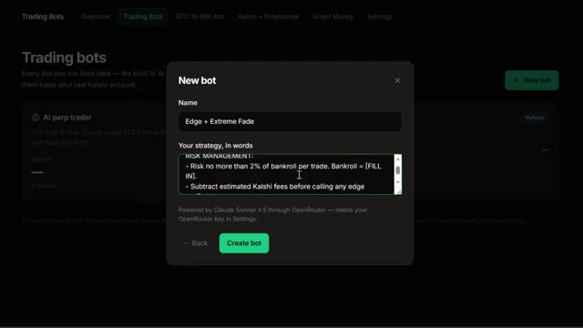
🔍 Agrandir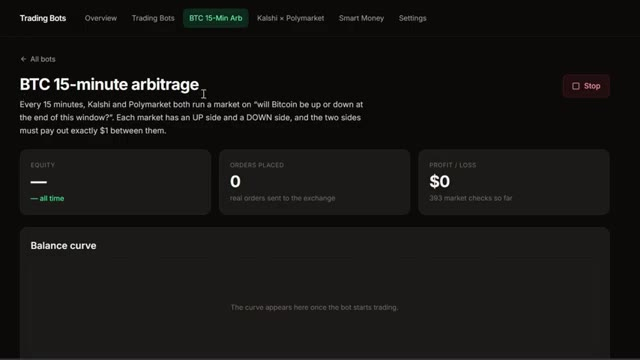
🔍 AgrandirUne fois que vous avez terminé, cliquez simplement sur Enregistrer les paramètres. Passons maintenant aux résultats. J'ai laissé ce bot d'arbitrage tourner pendant sept jours complets, les mains libres. Donc, comme vous pouvez le voir ici, nous avons commencé avec 100 dollars. Et en regardant la courbe de rebond, c'est une tendance haussière constante avec quelques petits retraits et pertes en cours de route, ce qui est tout à fait normal. Mais il a continué à progresser chaque jour. Les capitaux propres s'établissent à 38 %, 37 ordres passés au total, et le profit et la perte ont atteint 663,28 dollars à la fin des sept jours. Et tout ça grâce à un bot qui
Interface & Outils : Tableau de bord d'une application web de trading (bot d'arbitrage Kalshi x Polymarket).
Contenu textuel & Code : Métriques de performance : Equity de 38% (all time), 37 ordres placés, profit/loss de +$663.28 (1111 market checks), et un graphique de la courbe de balance allant d'environ 100$ le 1er août à 663.28$ le 7 août.
Action / Démonstration : Présentation des résultats en direct des performances du bot d'arbitrage après sept jours de fonctionnement.
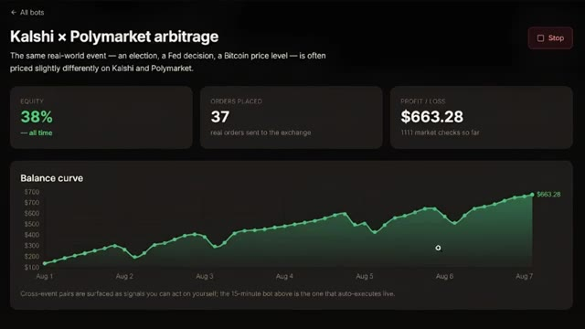
🔍 Agrandirassis là à capter des écarts que j'aurais complètement manqués manuellement. Je n'ai pas touché à un seul trade. Il a fait toute la surveillance, toutes les captures. J'ai juste regardé le chiffre grimper. Et c'est exactement pour ça qu'en faire tourner plusieurs à la fois est important. Plus de bots qui surveillent signifie que davantage de ces véritables écarts sont captés. Très bien, et regardez, pour les prochaines années, deux types de traders sur les marchés de prédiction vont exister. Ceux qui utilisent l'IA et ceux qui font encore tout manuellement. Mêmes marchés, résultats très différents. Voici comment vous placer du bon côté. Au sein de ma communauté AI Trade Edge, j'ai
Interface & Outils : Tableau de bord de bot de trading et plateforme Kalshi
Contenu textuel & Code : Métriques de performance, profit/perte de 663,28 $, 37 ordres placés, et graphique d'évolution du solde entre le 1er et le 7 août.
Action / Démonstration : Présentation des résultats de performance d'un bot d'arbitrage automatisé et consultation d'un marché sur Kalshi.
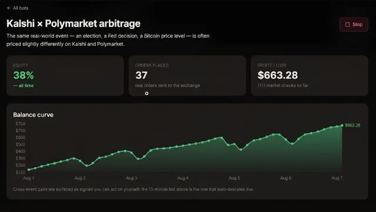
🔍 Agrandir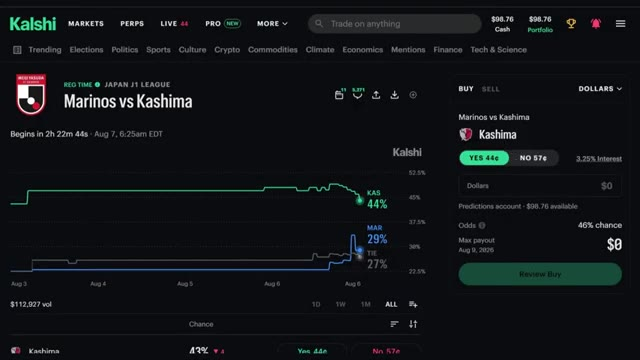
🔍 Agrandirchaque prompt, chaque bot, chaque template que j'utilise personnellement, tous réunis au même endroit. Vous vous souvenez de ces bots Kalshi dont j'ai parlé plus tôt ? Vous les avez tous là-dedans. Un bot d'arbitrage Bitcoin 15 minutes, un bot de pricing Kalshi Polymarket et un bot smart money qui suit où se déplacent les gros portefeuilles. De plus, vous pouvez coder le vôtre en utilisant Python, Claude, TradingView ou n'importe quel modèle disponible pour vous dès maintenant.
Interface & Outils : Application Web de gestion de bots de trading (dashboard personnalisé).
Contenu textuel & Code : Options de configuration de bots (Python script, Claude bot, Any AI model, TradingView bot) et métriques de performance du bot d'arbitrage BTC (Equity, Orders placed, P&L, Balance curve).
Action / Démonstration : Navigation dans l'interface de gestion et affichage des options de création de nouveaux bots de trading.
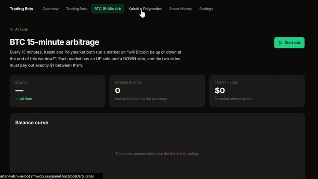
🔍 Agrandir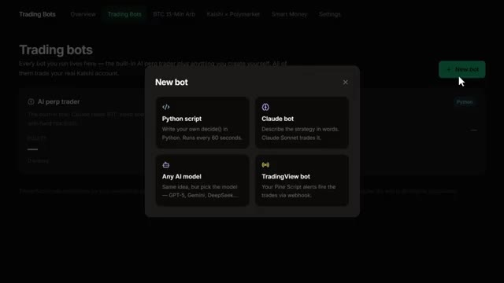
🔍 AgrandirIl y a aussi une formation complète au trading agentique, 2 heures et demie, de débutant à expert, aucun code nécessaire. À la fin, vous aurez votre propre système de trading par IA qui tourne en direct, pour 79,99 $ par mois. Un seul bon trade le rentabilise. Les 100 premiers membres bloquent ce tarif pour toujours. Liens dans la description. Vous ne pouvez sincèrement pas vous permettre de rater ça. Et c'est exactement tout ce dont vous avez besoin pour passer de zéro au lancement de votre propre bot de marché de prédiction alimenté par l'IA. Au bout de sept jours, ce truc a déjà prouvé que l'arbitrage entre Calci et Polymarket, c'est de l'argent bien réel posé sur la table. Il vous faut juste le
Interface & Outils : Whop, tableau de bord de bot de trading d'arbitrage
Contenu textuel & Code : Métriques de performance, courbe de balance, PnL à 663,28 $, taux d'équité à +38%
Action / Démonstration : Affichage des statistiques de performance d'un bot de trading en direct
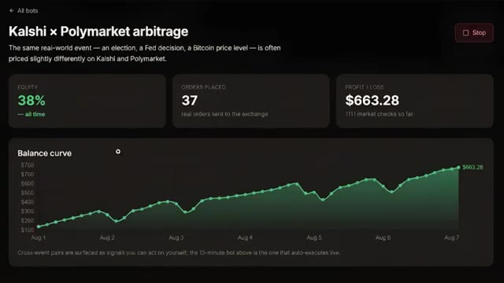
🔍 Agrandirle bon outil pour vraiment le saisir. Deux petites choses avant de partir. Assurez-vous de vous inscrire via le lien ci-dessous pour vraiment obtenir ce bonus de prédictions de 500 $ et le bonus perps de 25 $. C'est de l'argent réel qui travaille pour vous avant même que vous ne passiez un trade. Et deuxièmement, rejoignez le groupe WAP pour pouvoir récupérer ces bots directement ou vibe coder vos propres versions avec Claude. Si vous le souhaitez, regardez le tutoriel complet sur la façon d'utiliser Kalshi, même si vous êtes un débutant complet, jetez un œil à la vidéo qui apparaît à l'écran dès maintenant. Et si vous voulez le guide complet étape par étape sur la façon de construire votre propre
Interface & Outils : Interface web de la plateforme Kalshi / Kalshi Perpetuals
Contenu textuel & Code : Options de création de compte, présentation de bots de trading automatisés et graphiques de marchés de prédiction (WTI Oil).
Action / Démonstration : Navigation sur la plateforme Kalshi pour présenter l'inscription et les outils de trading.
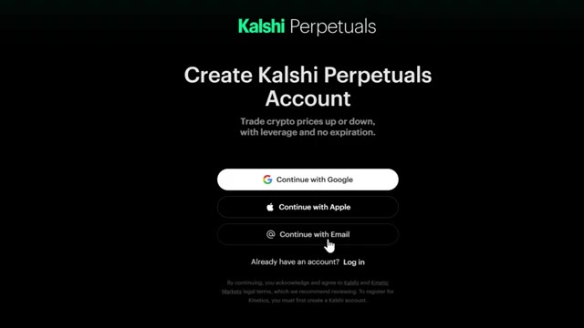
🔍 Agrandir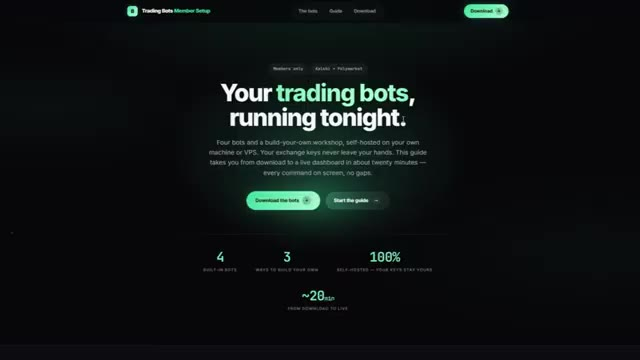
🔍 Agrandir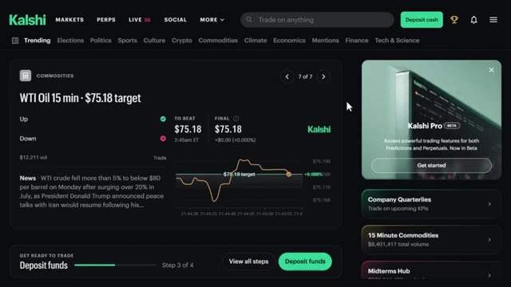
🔍 Agrandirsystème de trading agentique utilisant Claude, cette vidéo s'affiche également à l'écran, si cela vous a aidé, laissez un like, abonnez-vous pour en voir plus et on se retrouve dans la prochaine
Interface & Outils : Aucune interface visible.
Contenu textuel & Code : Aucun contenu, code ou graphique affiché.
Action / Démonstration : Aucune action ou manipulation en cours.